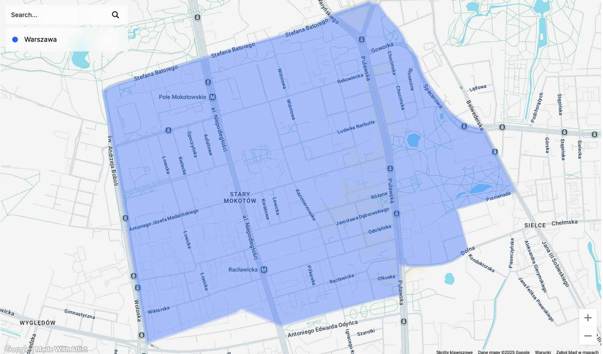

Stary Mokotów formalnie nie istnieje. Zmieńmy to!
Potrzebujemy minimum 3000 podpisów, aby oficjalnie utworzyć Osiedle Stary Mokotów, a następnie zorganizować wybory do Rady Osiedla.
Czym jest Osiedle i Rada Osiedla?
🏘️ Samorząd lokalny
Osiedle to najmniejsza jednostka samorządowa w Warszawie. Po jego utworzeniu mieszkańcy wybiorą Radę Osiedla w demokratycznych wyborach.
🤝 Głos mieszkańców
Rada Osiedla to ciało doradcze dla władz dzielnicy, reprezentujące interesy mieszkańców i pośredniczące między nami a urzędem.
✅ Teraz jest szansa
Granice zostały już wyznaczone we współpracy z mieszkańcami i Radą Dzielnicy. Teraz potrzebujemy Waszych podpisów, aby formalnie powołać Osiedle Stary Mokotów!
Obszar Osiedla Stary Mokotów

Proponowany obszar obejmuje historyczny Stary Mokotów - od Pola Mokotowskiego po Sielce, na południu graniczy z istniejącym osiedlem Wierzbno.
Co da nam Rada Osiedla?
- Utworzenie formalnej struktury samorządowej dla Starego Mokotowa
- Możliwość opiniowania lokalnych spraw do Rady Dzielnicy Mokotów jako jednostka pomocnicza
- Realny wpływ na decyzje dotyczące naszej okolicy poprzez oficjalne opinie i inicjatywy
- Silniejsza, zorganizowana społeczność z formalnym głosem w samorządzie
Jak podpisać inicjatywę?
Odwiedź punkt zbierania podpisów
Wejdź do jednej z kawiarni i poproś obsługę o teczkę z napisem "Rada Stary Mokotów".
Podpisz listę lub zabierz do domu
Możesz podpisać na miejscu lub wziąć pustą listę, zebrać podpisy od rodziny i sąsiadów, a potem zwrócić do teczki.
Mamy czas do końca listopada
Każdy głos jest na wagę złota. Poprzednie inicjatywy poległy przez brak wystarczającej ilości podpisów - tym razem damy radę!
Gdzie zbieramy podpisy?
Poproś obsługę o teczkę z napisem "Rada Stary Mokotów"
Najczęściej zadawane pytania
Podpis jest jedynie deklaracją poparcia dla utworzenia Osiedla Stary Mokotów. Nie wiąże się z żadnymi zobowiązaniami finansowymi ani innymi.
Każdy pełnoletni mieszkaniec Starego Mokotowa może podpisać inicjatywę. Wymagany jest tylko adres zamieszkania w naszej okolicy.
Aby formalnie utworzyć Osiedle Stary Mokotów, potrzebujemy minimum 3000 podpisów, co stanowi 10% spisu wyborców. Im więcej podpisów zbierzemy, tym silniejszy mandat będzie miało nasze osiedle.
Rada Osiedla będzie wybierana przez mieszkańców w demokratycznych wyborach. Członkowie działają społecznie, bez wynagrodzenia, spotykają się regularnie i reprezentują interesy mieszkańców wobec władz dzielnicy.
Tak! Po utworzeniu Osiedla odbędą się wybory do Rady Osiedla. Każdy mieszkaniec będzie mógł kandydować i głosować w powszechnych, równych i tajnych wyborach.
Wynika to z tego, że kilka lat temu na Wierzbnie mieszkańcy podjęli taką samą inicjatywę aby tam utworzyć swój samorząd. Uzbierali wymaganą ilość podpisów, utworzyli tzw. osiedle i nawet powołali Radę Osiedla Wierzbno. Wprawdzie po śmierci Przewodniczącego ta Rada na Wierzbnie się rozpadła, ale granice Wierzbna istnieją do dziś. W związku z czym nie możemy tego skrawka sobie "zabrać".
Imię i nazwisko, adres zamieszkania (zgodny z adresem ujęcia w Centralnym Rejestrze Wyborców), pesel. Każda teczka ma dołączone samoprzylepne paseczki, którymi można zakleić dane wrażliwe.
Kontakt
Email: komitet.kwiatowa1@gmail.com
Masz pytania? Napisz do nas!